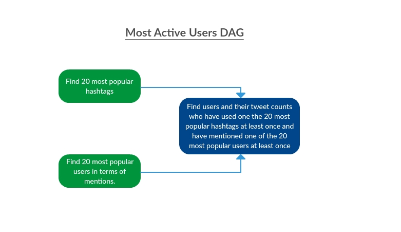
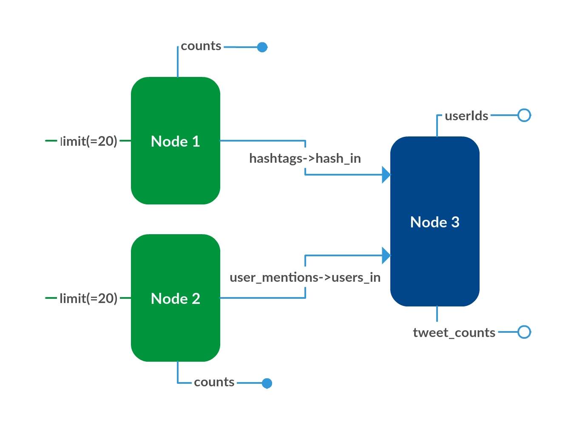

Composing multiple queries : DAG¶
Basic terminology¶
When we say Query, it means an one of the following three things:
- MongoDB query : A query not capable of giving any network information
- Neo4j query : A network based and/or time indexed query on the twitter network
- Post processing function : A python function which takes outputs of query(ies) as inputs and transforms them to give the output
DAG stands for directed acyclic graph. Thus it a directed graph with no cycles. The idea behind a DAG is to compose multiple queries to build a complex queries. A DAG has nodes and has directed connections connections between the nodes. Each node as a query associated with it.
Idea behind a DAG¶
As mentioned above, our main idea is to provide the user an easy abstraction to build complex queries. But apart from this there are several functions that the abstraction of a DAG seems to serve, which we list below:
- Provide an abstraction to build complex queries from simple queries.
- A particular database may be suited to answer particular type of queries. In fact this is the main reason behind storing data in mongoDB to answer commonly encountered queries. We expect the user to have a basic understanding of the database schemas and thus be able to have an idea of efficiency of the two databases in answering specific queries. Having such knowledge, the user can compose queries from different databases in sake of efficiency.
- It may be easy to do some projection of data output by a query post the execution, rather than coding it in the cypher in case of neo4j, or the aggregation pipeline in case of mongoDB. Thus, given the DAG abstraction, the user can feed the output of the query into a postprocessing node.
- On similar lines as above, the user may need to aggregate multiple outputs from different queries in a postprocessing function in a custom manner not supported by the query mechanism of the databases.
- Breaking a big query into smaller ones may be beneficial from the end user point of view because by doing so we can show the incremental results of the smaller parts(as they are executed) to the user instead of waiting for the entire big query to execute.
In this abstraction, a single query can also be treated as a DAG, one having a single node and no connections.
We store the queries that the user creates through the dashboard. The user can then specify the structure of the DAG network by uploading a file in which he specifies how outputs and inputs of queries are connected. We provide the details in the next section.
Building a DAG from queries¶
A DAG is composition of queries in which we need to specify how the outputs of queries upstream feed into the inputs of the downstream ones.
We explain how to build the queries with the help on an example. Let us build a DAG to get the most active users. Refer to this image(the green queries represent mongoDB queries and blue ones represent neo4j queries):
First we need to build the three queries separately, let us say we have the built queries as:
- mongoDB query(most_popular_hashtags_20 - Node 1) - 20 most popular hashtags in total
- INPUTS : limit(number of records to return)
- OUTPUTS : hashtags(list of popular hashtags, arranged by count in decreasing order), counts(list of their corresponding counts)
- mongoDB query(most_popular_mentions_20 - Node 2) - 20 most popular users(in terms of number of mentions) in total
- INPUTS : limit(number of records to return)
- OUTPUTS : user_metions(list of popular users, arranged by count in decreasing order), counts(list of their corresponding counts)
- neo4j query(active_users - Node 3) - userIds and their tweet counts who have used one of the popular hashtags atleast once and have tweeted with one of the popular user mentions atleast once
- INPUTS : hash_in(list of 20 most popular hashtags), users_in(list of 20 most popular users)
- OUTPUTS : userIds(list of required users), tweet_counts(total number of their tweets)
This query is demonstrated by the block diagram below also:
As mentioned in neo4j query generation section, we expect all the inputs to the neo4j query to be list of native objects. We put a similar constraint on the inputs to post processing function. Keeping this in mind, to ensure consistency and a seamless flow of information, the outputs of each query(mongoDB, neo4j or postprocessing function) is expected to be a list. Thus each node in the DAG accepts a dictionary as input in which the values are lists and similarly returns a dictionary with list values. The keys in both dictionary is the name of the inputs/outputs, as specified in the query generation.
The only place where the list input breaks is in case of mongoDB query as they require some basic inputs which can directly be provided as native objects(for example the limit input to the above two mongoDB queries).
Further we need to specify which outputs of the queries are to be returned.
The example input file to create the above DAG looks something like this:
3
n1 most_popular_hashtags_20
n2 most_popular_mentions_20
n3 active_users
INPUTS:
CONNECTIONS:
n1.hashtag n3.hashtag
n2.userId n3.um_id
RETURNS:
n3.userId
n3.count
Observe the structure of the file.
- Line 1 contains the number of nodes in the DAG.
- The following number of nodes lines contain the name of the nodes and each node corresponds to which query.
- Then a line contains the keyword “INPUTS:”. The inputs to the queries in the DAG are specified here. For example, had the
n1.hashtagvariable been taken as an input rather than feeding from the output of an upstream query, it would have been specified asn1.hashtag ["hash1","hash2"].- Then a line containing the keyword “CONNECTION:”. Below the connections in the DAG are specified.
- And finally a line contains the keyword “RETURNS:”. Below, we specify the outputs of the queries which are to be returned.
Please note that, all the outputs of all the queries can be seen in XComs in airflow and also in the logs of the DAG run. But we provide the user to specify the things of interest to the user, through the RETURN variables. This will be useful in case we provide a functionality to observe the variation of a quantity over periodic DAG runs in future. Presently we don’t have such a functionality in our Dashboard, though providing such a functionality shouldn’t be difficult.
DAG in airflow¶
To create a DAG in airflow, we need to create a file in the dags folder in the AIRFLOW_HOME directory. So, when the user specifies the DAG through out dashboard, we generate a python file in the mentioned folder. The newly created DAG is registered with airflow after sometime(airflow has a heartbeat thread running, which looks for new DAGs in the folder periodically) We generate the code to specify the dag in airflow something like this.
task_0 = PythonOperator(
task_id='node_{}'.format("n1"),
python_callable=execute_query,
op_kwargs={'node_name':"n1"},
provide_context = True,
dag=dag)
task_1 = PythonOperator(
task_id='node_{}'.format("n2"),
python_callable=execute_query,
op_kwargs={'node_name':"n2"},
provide_context = True,
dag=dag)
task_2 = PythonOperator(
task_id='node_{}'.format("n3"),
python_callable=execute_query,
op_kwargs={'node_name':"n3"},
provide_context = True,
dag=dag)
task_0 >> task_2
task_1 >> task_2
In the above code, the execute query is the function in which we execute queries and pass on their outputs to XComs to be used by the downstream nodes.
# Pushing onto XComs
context['task_instance'].xcom_push(k,v)
# Pulling from XComs
context['task_instance'].xcom_pull(task_ids=get_task_from_node(mapp[0]),dag_id = "active_users_dag",key=k)
Apart from this, some of the DAG properties which needs to be specified in airflow are generated as the default ones. For example the start_date property is specified as the current time.
Airflow provides certain other useful properties which may be of interest to the user(when the system becomes huge). For example, the user can set an email-address on which a notification will be sent in case of the success and/or failure of tasks. But, taking all these inputs though our dashboard to generate the DAG, is like create a complete front-end wrapper over the airflow system, which is not out aim. If the user does wish to use the more involved airflow properties, he/she can always edit the source of the generated dag file. Also, if the need arises to provide the user such functionality through our dashboard, then modifying the code to generate an additional line in the dag python file is easy.
Further on airflow, different views of the DAG can be observed, some of the views which are of particular interest to us are the following :
- Tree view - A view which tells the parallel streams in the DAG. We can specify how many parallel worker threads to have in airflow.
- Graph view - A graph view specifying the connections between the nodes of the DAG.
- Gant view - activates after the DAG has been executed, tells how much time taken by each query to execute.
Also,airflow provides the functionality to schedule the DAG runs periodically and properly stores the logs of each run. This can be leveraged in scenarios in which the user wants to run the same compositional query periodically.
Creating custom metric¶
Custom metric can be created on top of the DAG. A custom metric is nothing but a graphical view of the data output from the DAG execution.
To view a custom metric, the user is required to specify the following things:
- A DAG : The outputs of any queries in the DAG can be used to create the custom metric.
- A post processing function : accepts as inputs the outputs of any of the queries in the DAG and outputs a x and y coordinates to be used for plotting.
- Either mapping between the inputs of the post processing function and the outputs of the queries in the DAG or fixed native values to the inputs.
To display the custom metric, the DAG is executed to feed data into the post processing function. The user can choose to view the metric in either of these formats:
- Plot : The x and y coordinates are plotted using plotly through an Ajax call and displayed on the dashboard.
- Table : The values are displayed in table format again using an Ajax call.
An example of creating a custom metric will be provided in the Dashboard Website section.
Code Documentation for DAG abstraction¶
Here we provide a documentation of the code used to generate, execute the DAG.
Module to generate and store the DAG created by the user. Constains functions to generate DAG for the airflow dashboard also.
The create_dag module contains the classes:
When we instantiate an object of the class, the network source of the DAG is parsed to get parameters.
One can use the function create_dag.DAG.feed_forward() to execute the networkx DAG and the
function create_dag.DAG.generate_dag() to generate an airflow DAG.
Example illustrating how to create a DAG in which no input to no query is constant:
>>> queries = {"q1":["query 1",["inp1","inp2"],["out1","out2"]],
"q2":["query 2",["inp1"],["out1","out2"]],
"q3":["query 3",["inp1","inp2","inp3"],["out1"]]}
>>> types = {"q1":"mongoDB","q2":"PostProcesing","q3":"neo4j"}
>>> constants = {}
>>> # input_graph.txt contains the network of the DAG. For format see the documentation
>>> dag = DAG(open("input_graph.txt","r").read(),queries,types,constants)
Example of a query in which we use constants:
>>> # queries and types as before
>>> constants = {"q1":{"inp1":3}}
>>> # input_graph.txt contains the network of the DAG. For format see the documentation
>>> dag = DAG(open("input_graph.txt","r").read(),queries,types,constants)
Now to execute the graph provide a function which can execute the queries.
>>> dag.feed_forward(<execute>)
Create a DAG in airflow, get the plotly div for the DAG to be displayed on the dashboard
>>> dag.generate_dag(<dag_name>)
>>> dag.plot_dag()
-
class
create_dag.DAG(network_file_source, queries, types, constants)[source]¶ Bases:
objectThis class contains the functions to deal with the abstraction of DAG in our system. Some of the functions to this end, some of the functions are in the views.py file also.
The __init__ is called to initilaize a DAG object. It reads the source of the DAG network file passed to it as a string. It parses the string and extracts te nodes, connections, inputs and returns from the file.
Parameters: - network_file_source – a string contains the network specificaion of the DAG
- queries – a dictionary of queries with keys as the query names/postprocessing function names
- types – a dictionary containing the types of different queries
- constants – a dictionary of constant inputs to a query
For the queries parameter, the expectation depends on the type of query:
- For neo4j queries it will be the query code, input, output list
- For mongoDB queries it will be the partially formatted query specification, input, output list
- For post processing functions it will be the function_definition, input, output list
Note
The constants dictionary will contain only the mongoDB queries in current format
Note
We don’t do very comprehensive checking if the network is valid. In case it is not a DAG, the user is notified of it. Other than that, there will be some python errors if some other issue is there.
-
feed_forward(execute)[source]¶ Do a topological sort and then do a BFS of the DAG to execute all the queries. Expect that there is a function to evaluate a query given its inputs(as a dictionary) and returns a dictionary of outputs
Parameters: execute – a function to execute the queries
-
generate_dag(dag_name)[source]¶ Create a python file for the DAG in the dags directory of AIRFLOW_HOME. Generate the airflow code for the dag in the file. The templates used in the function are taken in the
create_dagmodule.Parameters: dag_name – the name of the dag to be generated Note
Currently it has the relative address of the folder as being contained in the myapp folder. Change it appropriately if you decide to change the airflow home
-
get_drawable_dag(G, queries, types, edges)[source]¶ Helper function for
create_dag.DAG.plot_dag(). It gets the locations of the various figures in the plotly plot of the DAG.Parameters: - queries – the queries in the DAG
- types – the types of queris. Not used, but can choose to get different colored rectangles for different query types
- edges – the edges in the DAG
Returns: a directed graph with the connections between inputs and outputs, the locations of bounding rectangles for the queries